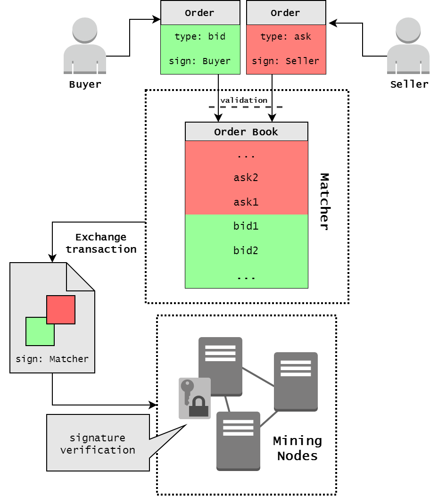

Decentralized Exchange (DEX)
- Motivation
- Decentralized Exchange
- Waves DEX
- Matcher Fee Calculation
- Tradable Balance
- Installing DEX
- Installing your Own Matcher
Motivation
The need to convert and exchange between crypto tokens is increasing with the enlargement of cryptocurrencies number. One of the main features of the blockchain environment is decentralization, but until recently only centralized exchanges existed, even for cryptocurrencies such as Bitcoin or Etherium. Many exchanges support the buy and sale of cryptocurrencies, fiat currencies, and cryptocurrency tokens. Examples of such centralized exchanges are Coinbase, BTC-e, ShapeShift and Mt.Gox.The centralization experience in this sphere is lamentable, the cause of a single point of failure - the exchange. In this case, all users funds should be kept in one place for participation in trade. The user's funds are stored directly in the exchange, and it is responsible not only for matching orders and keep the current order book in the correct state but also for depositors' funds. The Mt.Gox collapse is the brightest example of why it is not reliable, the resulting loss after compromised it was about 650,000 BTC. Someone can hack into exchange system and all users will lose everything, cause their private keys are kept all together, like in one of version BTC-e fund's theft. And these are not the only exchanges that have lost the funds of depositors in this way. The use of a decentralized approach in the entity of an exchange helps to avoid the involvement of many users assets into problems caused by the danger of front running by intruders into the work of exchange.
1. Decentralized Exchange
The decentralized exchanges do not require users to trust them with their money: user's wallet is not controlled by a single entity. Orders are digitally signed directly by owners, as an authorization process. Users control their funds, but on-chain trading has the side effect of not real-time trading as at a centralized exchange.
Decentralized exchanges have some advantages over centralized, but also drawbacks.
If all components of exchange are decentralized there is no automatic matching of buy and sell orders, this operation also should be done by users. For example for a specific order, which is validated and put in an order book, any other user can add a digitally signed counterorder and send the complete transaction with a pair of orders to the blockchain. Then the assets are transferred between the buyer and seller.
Also with such lack of automatic matching and fast cancellation, there is vulnerability to miner front-running. The miner of the next block will always have the option to execute canceled orders with themselves as the counterparty, potentially profiting from such an order.
What if we decentralize not all components of exchange, but only the matcher part? This design eliminates two of the described problems above: the arbitrageur with already canceled orders, and miners front-running. Unlike centralized exchanges, the decentralized solution with centralized matcher won’t have the power to steal users’ deposits.
2. Waves DEX
Waves provides a decentralized exchange (DEX), which allows trading different assets back and forth between users, as a traditional exchange, with stronger security guarantees to end users due to its decentralized nature. An opportunity of creating some new assets, based on Waves, allows early trading of a crowdfunding stake, that provides liquidity for tokens. For this purpose, tokens should be sold in public locations, where buyers and sellers may post orders.
The real-time trading is achieved thanks to the only centralized design element of our DEX - the order book Matcher, which matches incoming orders and execute trades at high speed, typically within milliseconds. There is no need to wait for the next block to know whether a trade has been executed successfully, this provides speed at the level of centralized exchange and the security of the decentralized protocol.
The orders are linked in pairs by individual nodes, which work as Matcher. Before getting into Waves blockchain, exchange transactions are always checked by the nodes for matching the prices in orders so that the matcher cannot implement the "wrong" transactions. Then the Matcher creates Exchange Transaction, signs it with its signature and put it into blockchain for to fix changes in balances of users. The Matcher also can match orders partially, as at ordinal exchange. After the transaction is confirmed, Matcher's sign is validated by mining nodes and exchange transaction put into the blockchain, user account balances of assets are changed according to amount and order execution price. The important point is that the funds are transferred only after publishing in the blockchain. If the Matcher fails, the exchange will not take place, but the funds will not be lost, cause exchange does not own client's assets.
A user initiates his willingness to purchase or sell assets by creating, signing and sending a Limit Order request to the Matcher node. The Limit Order here is the same as at all exchanges: an order for a buy (sell) of a fixed number of a token at a price equal or better than specified. When a new Order is submitted to the DEX all its fields are checked for adequacy and a signature is validated by sender's public key. Then, the Order is validated, based on internal Matcher state: Order with such id should not exist already and the sum of all Order amounts for a particular asset should be less or equal to the balance of that asset on sender's account. The scheme of work with the DEX is shown in the Figure 1:
Figure 1
User can set an expiration time (maximum timestamp) to the order, and when the order expires it will be automatically canceled. One of the rules at DEX is that all orders older than 30 days will be canceled by default. An expiration time for each order is specified by the user at the time the order is signed. The expiration time is a long integer value that represents the absolute number of seconds since the UNIX epoch. When the order is unfilled and its expiration time is more than now UNIX timestamp, it can be canceled by the user. In this case, the order gets into blockchain as Cancelled order and nobody can fill it since that.
The full execution cycle for one order is following:
- If for a submitted order there is no counter-order matched by price, then the order would be put in the corresponding order book.
- If there is a counter-order that matches with the submitted order, then the order execution is performed. That means the counter-order is removed from order book and the matcher creates exchange transaction, signs it by matcher's private key and is sent to the Waves network for including in the blockchain.
- If an amount of a submitted order is a big enough to execute a few orders, Matcher creates several transactions. Created transactions have amounts equal to matched counter-order amounts. Matched counter-orders are chosen in order of their acceptance time (First In, First Out).
In every time of order's life, it has a certain state, depending on which stage of its life cycle it is now. When an order is in an order book, but not filled yet - it has "Accepted" state, also it can be "Filled", "Partially Filled" or "Canceled". Orders, which are not fully filled, can be canceled, after that the order will be removed from matcher's order book.
3. Matcher Fee Calculation
The fix full transaction fee now is equal to 0.003 waves for one order, whether buying or selling, regardless of the amount of the future deal. The exchange transaction contains two separate fields for Matcher's fee, which goes from buyer's order and seller's order. An order can be fully executed by some transaction, in this case, all matcher fee from it is included in that transaction.
If the order is partially executed by some deal-transaction, matcherFee is included in that transaction proportionally to the executed amount, i.e.
executedAmount * orderMatcherFee / orderAmount.
The remaining matcher fee for this order will be included in other transactions until order's full execution.
3.1 Example
There are 3 different orders (Figure 2): two buy orders and one sell. For each full order, a user has to pay exactly 0.003 waves of a fee, and this fee will be written off as the order is executed. In our example:
- the Order1 is fully matched with a 70% part of Order3 by Transaction1 and matcher's fee for this transaction is equal to 0.003 + 0.0021 - 0.003 = 0.0021 waves since Matcher pay to miners transaction fee which is also equal to 0.003 Waves.
- The 50% of Order2 matches with 30% part of Order3 by Transaction2 and matcher's fee for this transaction is equal to 0.0009 + 0.0015 - 0.003 = -0.0006 waves.
Thus, the fee that the matcher gets from users for these transactions is0.0021 - 0.0006 = 0.0015 waves. And the fee that the matcher pays to miners is0.006waves.
Figure 2: example of matcher's fee work, TX1 - Transaction1, TX2 - Transaction2, Ord1 - Order1, Ord2 - Order2, Ord3 - Order3
Summary:
| period | matcher's fee | miner's fee | left for the matcher |
|---|---|---|---|
| last month | 681.42336675 waves | 569.721 waves | 16.39% |
| all time | 3476.01418346 waves | 2824.771 waves | 18.74% |
To sum up, for all time the matcher keeps only 18.74% of fees and everything else it pays to miners for placing transactions in blocks (data for 8.02.2018).
4. Tradable balance
Tradable balance shows, how much you can spend in orders. It calculates by the formula:
tradable_balance(asset) = balance_of_asset -
spendings_of_asset_in_transactions_in_utx_pool -
reserved_balance_for_asset
balance_of_asset
The current balance in asset:
spendings of asset in transactions in utx pool
The sum of all spending by the asset of unconfirmed transactions.
For example, if you are transferring WAVES and sending a data transaction
and these transactions haven't yet forged, spendings_of_WAVES_in_transactions_in_utx_pool will be amount_of_transferred_waves + transfer_fee + data_transaction_fee.
Note: UTX pool of one node could not be the same as on other node.
reserved balance for asset
Also known as open volume. The sum of all spending by the asset of all orders in pairs with this asset.
For example, you buy BTC by Bitcoin Cash (1) and sell Bitcoin Cash for WCT (2), and these orders are still active and haven't filled yet.
Then spendings_of_Bitcoin_Cash_in_active_orders will be amount_of_spending_Bitcoin_Cash in (1) + amount_of_selling_Bitcoin_Cash in (2).
Note, for WAVES order's fees are included in reserved balance.
As you know, all orders in DEX requires WAVES as the fee. Because of this, there is an exception for the rule we spoke above.
If you buy WAVES by other asset, reserved balance in waves in this order will be: max(fee - amount_of_received_waves_in_this_order, 0).
So, you can buy WAVES for BTC even if you have no WAVES.
5. Installing DEX
- Download the Waves client from our official website, www.wavesplatform.com , or use the webwallet, available at client.wavesplatform.com
- Deposit your bitcoins or any supported coins and tokens into the wallet and start trading using the Waves DEX.
6. Installing your Own Matcher
- Users can install their own matcher by installing the Waves software and enabling the matching functionality.
- The Matcher earns fees from the services it provides, so you can substantially increase your mining revenues.
- When a user sends an order to Matcher he doesn't transfer ownership of his money to anyone, his money remains on his account until the order is matched with counter-order.